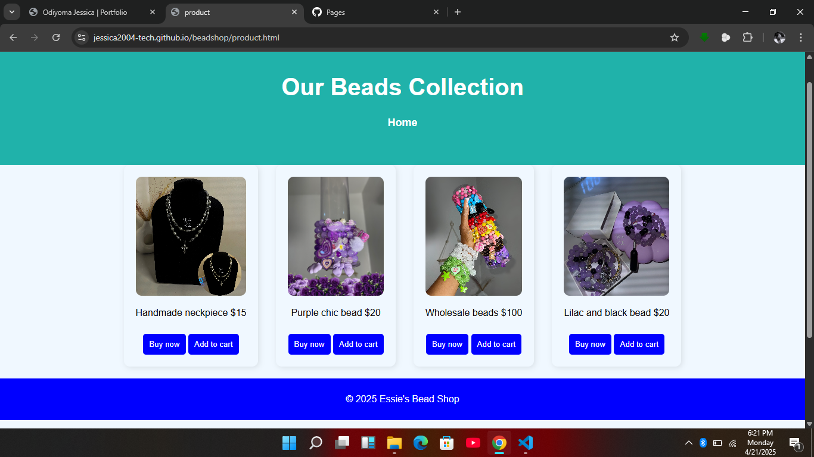

projects
Beadshopwebsite

A simple 2 page website created to display and sell handmade bead
Tool usee HTML,CSS,JAVASCRIPTAspiring Web Developer
I’m Odiyoma Jessica, a final-year student at Sourthern Delta University Ozoro, from the Department of Information Systems and Technology under the Faculty of Computing. I’m currently learning web development with the goal of becoming a full-time developer. I enjoy creating websites because they’re interesting and help me learn new things. In the future, I hope to become a skilled developer and programmer, building websites, apps, and software that make a real impact.
A simple two-page website created to display and sell handmade bead jewelry.
Tools Used: HTML, CSS Grid, JavaScript
View Project
A simple 2 page website created to display and sell handmade bead
Tool usee HTML,CSS,JAVASCRIPTEmail: Jessieandy8@gmail.com
GitHub: jessica2004-tech